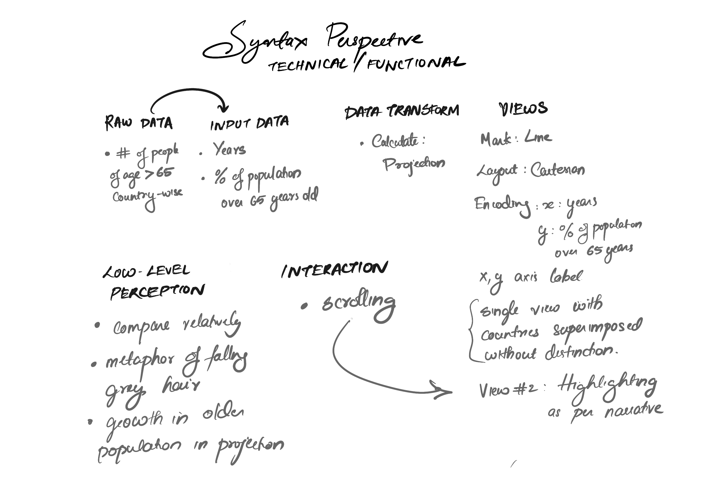

Design Citique
Jeena Philip
Going grey is an award winning visualisation by Reuters Graphics. The vizualisation bagged the bronze award in the 2019 Kantar Information is Beautiful Awards in the People, Language and Identity Category.
PURPOSE AND OBJECTIVE
The purpose of the visualisation is to bring awareness about the issues faced by Japan as a county with aging population. This information could help other countries to learn from Japan's experence. The knowlendge of the vestige of the boom of economic growth in Japan could allow countries like Germany, China and Italy which are next in line, to better prepare for any 'demographic tax' on economic growth.
AUDIENCE
The audience of this visualisation can be the population of Japan, in order to see what more they should prepare for upcoming years as per the projection. Eg: Investing more in healthcare for older generations it would also provide information to people of power in other countries to learn from the experience and more generally, it could be anyone interested in world news.
The visalisation conveys the the information honestly and in a simple narrative style
VISUALISATION DESIGN
The visualisation is a simple line graph projection. The white lines that seem to be falling down is an apt metaphor: it is simple and effective in catching the reader's eye and fits seamlessly into the narrative. There are multilple small graphs and maps used along the rest of the piece for effective story telling and the interactive graphics showing the change in number of people in different age groups in japan over time is intriguing with the obvious change in shape of the graph telling the story of how the future of japan will be like.
INTERACTION AND NARRATIVE DESIGN
The main interaction is through scrolling and highlighting is used to emphasis certaing lines of the graph to tell the story better. However, it is not possible to select certain lines and get more details on demand. The graph is at the beginning and this provides a nice way to get hooked on the news piece and continue reading.
The narrative covers a wide range of issues associated with an aging population in Japan like the demographic perspective, the urban rural divide, the projection of population in future etc and moves into the issues that can be caused by less young and more old (age>65) population like labour shortage, older prison inmates and their inability to find job, lack of healthcare services etc.
This narrative style works well as a story telling by catching the readers attention first with a viz, and later telling the story of what the topic is and what are the issues caused by it and is well intended to help other countries learn from Japan's case study.
AESTHETIC AND QUALITY OF DESIGN
The overall black and white theme suits the topic well. There is no unncecessary details added in any of the visualisations used and only shows what is needed to tell the story right. The graph in itself is very minimal with only two enties in y axis for 20% and 40%. There does not seem to be any innovation int he design and pretty much follows the style as seen in many works by reuters.
WHAT IF
All this analysis brings us to the question of what could have been better or what would you do differently. Althought the minimal design suits the theme and helps in bringing just the right amount of information to the user, I would have liked to play with the visualisation a bit more, may be by checking India's projection or highlighting the other lines to see more details on that country. So, adding a county wise filter and and option to hightlight on hover would have been better.
The second visualisation for showing the change in male and female population over time is kept as a video and cannot be controlled. A slider here to check the details would have added value to readers who are interested in the topic.
The pragmatic semantic and syntax perspective is sketched below
